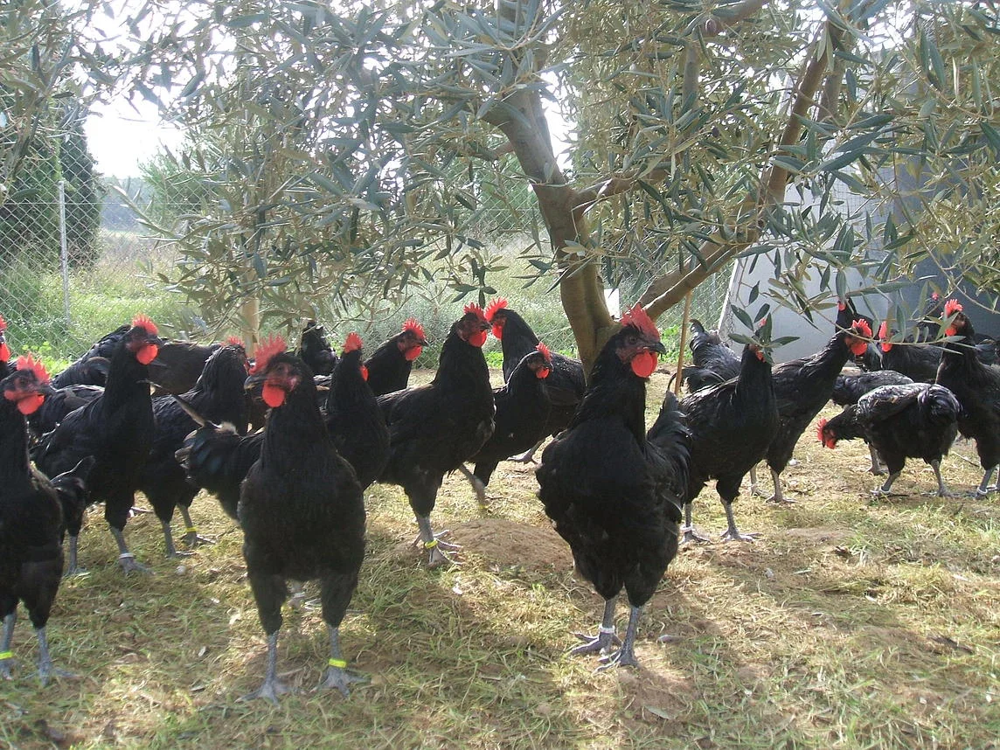
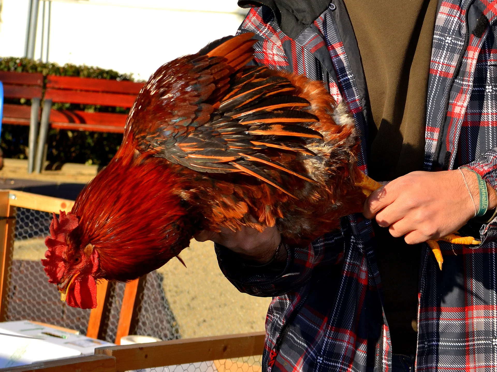

Penedesenca: la negra catalana de la Fira del Gall

La Penedesenca es la gallina autóctona del Penedès, en Cataluña, con centro en Vilafranca del Penedès (Barcelona). Es una raza de creación relativamente reciente, fijada a principios del siglo XX a partir de las gallinas negras del país, y hoy es un emblema gastronómico del Penedès: el gallo negro es el protagonista de la Fira del Gall y de la cocina de fiesta de Vilafranca.
Origen e historia
La Penedesenca es la gallina autóctona del Penedès, en Cataluña, con centro en Vilafranca del Penedès (Barcelona). Es una raza de creación relativamente reciente: se fijó a principios del siglo XX a partir de las gallinas negras del país, seleccionadas por los avicultores de la comarca por su puesta de huevo muy oscuro y su rusticidad, y se presentó en público en la Fira del Gall de Vilafranca, la feria avícola que cada diciembre convierte a la gallina negra en símbolo de la ciudad. La raza estuvo al borde de la desaparición con la llegada de las estirpes industriales de puesta y se recuperó gracias a criadores aficionados y a la Associació de Criadors de la Raça de Gallines Penedesenca, que mantiene el libro genealógico y el estándar. Hoy es una de las razas autóctonas catalanas reconocidas y un emblema gastronómico del Penedès: el gallo negro es el protagonista de la Fira del Gall y de la cocina de fiesta de Vilafranca.
Características físicas
La gallina: ave de tamaño mediano, de unos 2 a 2,3 kg, de porte recogido y activo. Su plumaje es negro intenso, con reflejos verdosos al sol en las aves bien cuidadas. La cresta es su rasgo más distintivo: una cresta en forma de clavel, ancha y con puntas, que en la gallina es de tamaño mediano y se mantiene erguida o ligeramente caída hacia un lado; las orejillas son blancas, en contraste con el plumaje negro, y el pico es oscuro. Las patas son de color pizarra oscuro, sin plumas, y la cola es de tamaño medio, llevada en ángulo moderado.
El gallo: más grande, de unos 2,5 a 3 kg, con la misma capa negra y un porte más erguido y vigilante. Su cresta en clavel es grande y vistosa, de color rojo vivo, y las hoces de la cola son negras, largas y con brillo verde metálico. Es un gallo de aspecto noble y algo arisco, de movimientos rápidos, que defiende el corral sin ser agresivo con las personas.
Variedades de plumaje
La variedad clásica y más conocida es la negra, la del gallo de la Fira del Gall. El estándar reconoce además la barrada, la perdiz y la trigueña (y en algunos criaderos la blanca), todas con la misma estructura y la misma cresta en clavel. En el corral de una granja rentable, la negra es la que mejor se reconoce y la que más se pide, porque es la imagen de la raza.
Puesta
La Penedesenca pone en torno a 160 huevos al año, de color marrón muy oscuro, casi rojizo, uno de los huevos más oscuros de las razas españolas y su gran seña de identidad en el mercado: el huevo moreno del Penedès se vende como producto diferenciado. Los huevos son de tamaño mediano (unos 60 g). La puesta es estacional: fuerte en primavera y verano, con un parón en la muda de otoño y un descanso invernal si no se suplementa luz.
Carácter
Es una gallina activa, nerviosa y muy campera: le gusta picotear, escarbar y alejarse del gallinero si el terreno se lo permite. Es desconfiada con los extraños, se asusta con facilidad y vuela mejor que las razas pesadas, por lo que conviene un cercado alto. Con el cuidador habitual es mansa y se deja manejar. El gallo es protector y canta con frecuencia, pero no suele ser agresivo.
Cuidados, alimentación y alojamiento
Es una raza rústica, hecha para el campo mediterráneo: soporta bien el calor y el frío moderado, siempre que tenga un gallinero seco y sin corrientes. Necesita espacio: como mínimo 4–5 m² de corral por ave para que pueda campear y no estropear el terreno, y un gallinero ventilado con perchas altas (le gusta dormir en alto) y nidales oscuros y tranquilos, uno por cada 4–5 gallinas. Come de todo: pienso de puesta como base, grano (trigo, maíz) y todo lo que encuentre picoteando —hierba, insectos y restos de huerta—, con conchilla o carbonato cálcico siempre disponible para la cáscara de ese huevo tan oscuro. En muda necesita un aporte extra de proteína. No es una raza para jaula ni para gallinero intensivo: sin campo pierde salud y puesta.
Para qué sirve
Es una raza de doble aptitud con acento en el huevo: se cría sobre todo por su huevo moreno, que es su valor comercial, y el gallo negro es carne de fiesta, de crecimiento lento y sabor marcado, muy apreciada en la cocina catalana. También tiene un papel ornamental y cultural: es la gallina de la Fira del Gall y un reclamo para granjas que venden producto local con historia.
Curiosidades
El huevo de Penedesenca es tan oscuro que en las catas a ciegas se distingue por el color de la cáscara antes que por el sabor; la Fira del Gall de Vilafranca, declarada fiesta patrimonial, gira en torno a esta raza cada mes de diciembre; y la cresta en clavel es tan peculiar que muchos aficionados reconocen la raza por la cresta antes que por el plumaje.
Fotos de la raza


Fotos y licencias
Las fotos de esta ficha son fotografías reales con licencia libre de uso comercial. Las licencias CC BY 3.0, CC BY-SA 2.0 y CC BY-SA 3.0 exigen atribuir al autor; las CC BY-SA exigen además compartir las adaptaciones bajo la misma licencia. Las fotos se publican en WebP a partir de los originales, con su autor y su licencia.
- Gallina (foto principal): Galceran — CC BY-SA 2.0 (31-12-2009).
- Grupo: Maria Antònia Udina Castell — CC BY-SA 3.0.
- Gallo: Angela Llop — CC BY 3.0.

.jpg){kind=link}
Fuentes
Datos raciales contrastados con el catálogo oficial de razas del Ministerio de Agricultura, Pesca y Alimentación: Penedesenca — datos morfológicos (MAPA). La raza la mantiene la Associació de Criadors de la Raça de Gallines Penedesenca, que gestiona el libro genealógico y el estándar.
Prepara tu lote y tu gallinero
Antes de comprar aves, calcula el espacio que necesitas, lo que costará alimentarlas y cuándo tendrás los primeros huevos.
Comprueba la normativa local: algunas zonas exigen registrar las aves o avisar al ayuntamiento. Revisa las normas de tu municipio antes de criar.